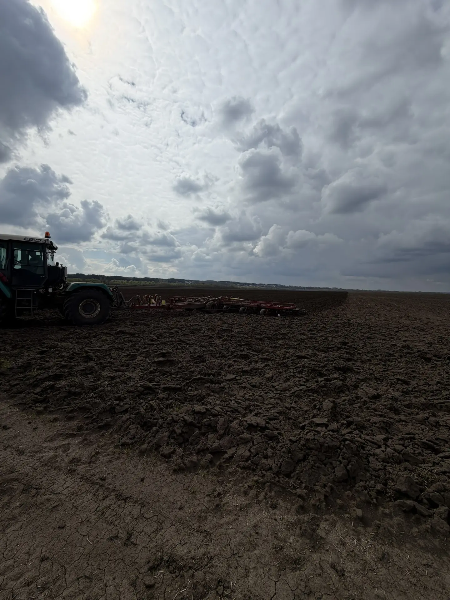
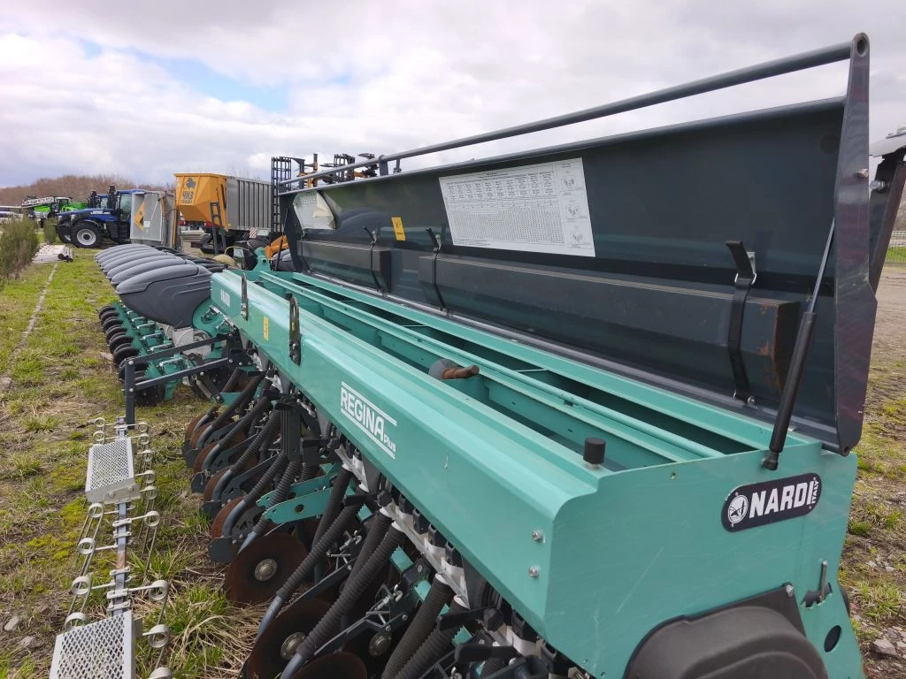

История нашей базы
Научно-производственная база O.A.S.I.S — лаборатория будущего агрономии
Наша история началась в 2020 году с амбициозного решения — возродить селекционные программы в России. Первоначальная цель заключалась в создании новых сортов и гибридов сельскохозяйственных культур, идеально адаптированных к условиям нашей страны. На старте проекта мы опирались на опыт и консультации ведущих европейских селекционеров. Это помогло выстроить стратегию и освоить передовые методики.
Однако уже в ходе первых исследований стало очевидно, что для настоящего прорыва необходима полная локализация производства. Мы приняли решение сосредоточиться именно на разработке отечественных сортов и гибридов, опираясь на собственные научные знания и созданную серьезную техническую базу. Для реализации этой стратегии было зарегистрировано юридическое лицо — компания «О.А.З.И.С.». Сразу после создания компании мы приобрели базу, которая впоследствии превратилась в нашу селекционную станцию.
За годы работы коллектив компании вырос в несколько раз, а материально‑техническая база не просто расширилась — она постоянно модернизируется и поддерживается на высочайшем уровне.
90%
сотрудников с высшим образованием
15+
единиц спецтехники
24/7
работа лаборатории
⚙️
Парк техники мирового уровня
Сегодня наш парк техники позволяет вести селекционную работу на мировом уровне. В арсенале компании:
4 семяочистительных комплекса
3 стационарные молотилки
4 селекционных комбайна
линия по подработке родительских форм подсолнечника
комплекс лотковых сушилок для гибридов F₁
3 пропашные сеялки
1 зерновая сеялка
2 зерновых комбайна
5 тракторов различной мощности
👥
Главное богатство — люди
В «О.А.З.И.С.» работают квалифицированные механизаторы, опытные специалисты на участках гибридизации, команда первичного семеноводства и группа профессиональных селекционеров.
90 % сотрудников имеют высшее образование, а ключевые отделения возглавляют кандидаты сельскохозяйственных наук.
90 % сотрудников имеют высшее образование, а ключевые отделения возглавляют кандидаты сельскохозяйственных наук.
🧪
Исследования, тестирование, инновации
- Собственная лаборатория позволяет проводить полный комплекс анализов без привлечения сторонних организаций.
- Активное научное сотрудничество со всеми ведущими научно‑исследовательскими и образовательными учреждениями Воронежской области.
- Участие в программах ФАО по сохранению биоразнообразия планеты.
- Тесное взаимодействие с профильными отделениями по борьбе с засухой и созданию засухоустойчивых культур, внедрению новых сельскохозяйственных культур.
🌵 Уникальный проект
Один из уникальных проектов нашей селекционной станции — программа по созданию адаптированных к жарким условиям Российской Федерации сортов кактуса опунции. Этот проект демонстрирует нашу готовность идти нестандартными путями и искать решения для самых сложных агрономических задач.
«О.А.З.И.С.» — это не просто компания. Это команда единомышленников, объединённых общей целью: развивать отечественную селекцию, создавать устойчивые сорта и гибриды, обеспечивать продовольственную безопасность страны. Мы гордимся своим прошлым, уверенно смотрим в будущее и готовы к новым вызовам!